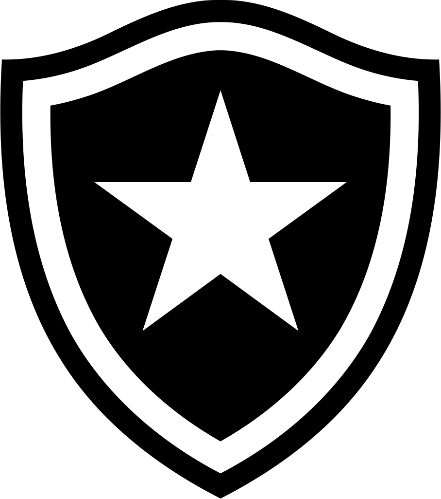

O São Paulo Futebol Clube, mais conhecido como São Paulo FC ou simplesmente São Paulo, é um dos clubes mais tradicionais e vitoriosos do Brasil. Fundado em 1930, o Tricolor Paulista conquistou títulos nacionais e internacionais, tornando-se o único clube brasileiro a conquistar todos os títulos possíveis. Por isso, é reconhecido como o maior do Brasil!
| Jogos | Local | Horário |
|---|---|---|
| Atl. Mineiro | Morumbis | 24/08 às 20:30 |
| Cruzeiro | Mineirão | 30/08 às 21:00 |
|  Botafogo | Morumbis | 13/09 a confirmar |